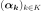
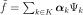
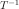
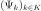

FunctionalChaosResult¶
-
class
FunctionalChaosResult(*args)¶ Functional chaos result.
Notes
Structure created by the method run() of
FunctionalChaosAlgorithm, and obtained thanks to the method getResult().Methods
getClassName(self)Accessor to the object’s name.
getCoefficients(self)Get the coefficients.
getComposedMetaModel(self)Get the composed metamodel.
getComposedModel(self)Get the composed model.
getDistribution(self)Get the input distribution.
getId(self)Accessor to the object’s id.
getIndices(self)Get the indices of the final basis.
getInverseTransformation(self)Get the inverse isoprobabilistic transformation.
getMetaModel(self)Accessor to the metamodel.
getModel(self)Accessor to the model.
getName(self)Accessor to the object’s name.
getOrthogonalBasis(self)Get the orthogonal basis.
getReducedBasis(self)Get the reduced basis.
getRelativeErrors(self)Accessor to the relative errors.
getResiduals(self)Accessor to the residuals.
getShadowedId(self)Accessor to the object’s shadowed id.
getTransformation(self)Get the isoprobabilistic transformation.
getVisibility(self)Accessor to the object’s visibility state.
hasName(self)Test if the object is named.
hasVisibleName(self)Test if the object has a distinguishable name.
setMetaModel(self, metaModel)Accessor to the metamodel.
setModel(self, model)Accessor to the model.
setName(self, name)Accessor to the object’s name.
setRelativeErrors(self, relativeErrors)Accessor to the relative errors.
setResiduals(self, residuals)Accessor to the residuals.
setShadowedId(self, id)Accessor to the object’s shadowed id.
setVisibility(self, visible)Accessor to the object’s visibility state.
-
__init__(self, *args)¶ Initialize self. See help(type(self)) for accurate signature.
-
getClassName(self)¶ Accessor to the object’s name.
- Returns
- class_namestr
The object class name (object.__class__.__name__).
-
getCoefficients(self)¶ Get the coefficients.
- Returns
- coefficients2-d sequence of float
Coefficients

.
-
getComposedMetaModel(self)¶ Get the composed metamodel.
- Returns
- composedMetamodel
Function 
- composedMetamodel
-
getDistribution(self)¶ Get the input distribution.
- Returns
- distribution
Distribution Distribution of the input random vector
 .
.
- distribution
-
getId(self)¶ Accessor to the object’s id.
- Returns
- idint
Internal unique identifier.
-
getIndices(self)¶ Get the indices of the final basis.
- Returns
- indices
Indices Indices of the elements of the multivariate basis used in the decomposition.
- indices
-
getInverseTransformation(self)¶ Get the inverse isoprobabilistic transformation.
- Returns
- invTransf
Function 
such that .
.
- invTransf
-
getModel(self)¶ Accessor to the model.
- Returns
- model
Function Physical model approximated by a metamodel.
- model
-
getName(self)¶ Accessor to the object’s name.
- Returns
- namestr
The name of the object.
-
getOrthogonalBasis(self)¶ Get the orthogonal basis.
- Returns
- basis
OrthogonalBasis Factory of the orthogonal basis.
- basis
-
getReducedBasis(self)¶ Get the reduced basis.
- Returns
- basislist of
Function Collection of the K functions

used in the decomposition.
- basislist of
-
getRelativeErrors(self)¶ Accessor to the relative errors.
- Returns
- relativeErrors
Point The relative errors defined as follows for each output of the model:
 with
with  the vector of the
the vector of the  model’s values
model’s values
 and
and  the metamodel’s values.
the metamodel’s values.
- relativeErrors
-
getResiduals(self)¶ Accessor to the residuals.
- Returns
- residuals
Point The residual values defined as follows for each output of the model:
 with the model’s values and the
metamodel’s values.
with the model’s values and the
metamodel’s values.
- residuals
-
getShadowedId(self)¶ Accessor to the object’s shadowed id.
- Returns
- idint
Internal unique identifier.
-
getTransformation(self)¶ Get the isoprobabilistic transformation.
- Returns
- transformation
Function Transformation
 such that .
such that .
- transformation
-
getVisibility(self)¶ Accessor to the object’s visibility state.
- Returns
- visiblebool
Visibility flag.
-
hasName(self)¶ Test if the object is named.
- Returns
- hasNamebool
True if the name is not empty.
-
hasVisibleName(self)¶ Test if the object has a distinguishable name.
- Returns
- hasVisibleNamebool
True if the name is not empty and not the default one.
-
setModel(self, model)¶ Accessor to the model.
- Parameters
- model
Function Physical model approximated by a metamodel.
- model
-
setName(self, name)¶ Accessor to the object’s name.
- Parameters
- namestr
The name of the object.
-
setRelativeErrors(self, relativeErrors)¶ Accessor to the relative errors.
- Parameters
- relativeErrorssequence of float
The relative errors defined as follows for each output of the model:
with the vector of the model’s values
and the metamodel’s values.
-
setResiduals(self, residuals)¶ Accessor to the residuals.
- Parameters
- residualssequence of float
The residual values defined as follows for each output of the model:
with the model’s values and the
metamodel’s values.
-
setShadowedId(self, id)¶ Accessor to the object’s shadowed id.
- Parameters
- idint
Internal unique identifier.
-
setVisibility(self, visible)¶ Accessor to the object’s visibility state.
- Parameters
- visiblebool
Visibility flag.
-
 .
.